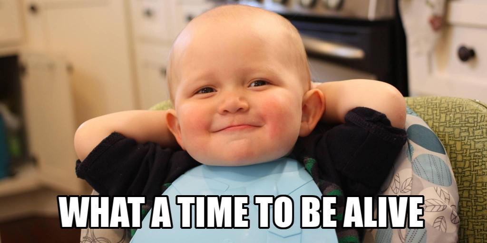

Our project idea is called Arc. The Arc is accounting software directed at all ages to help individuals get financially stable through budgeting. Budgeting is done by the users inputting their data into the software, which would, in turn, transform the raw data into meaningful information, which is then presented to the user in the form of reports and graphs. The budgeting feature is similar to a spending plan that takes into account both the current and future income and expenses of the user, which is valuable for long-term users as it will keep the users spending in check and make sure their savings are on track for the future and help reach their financial goals. Arc also will have a learning feature directed at a younger audience in the form of a game/simulation to assist in learning about basic accounting and budgeting skills so users can learn the importance of financial stability at a young age.
Our group's motivation for Arc is to create a valuable and unique project that offers a positive outcome for software users. We want to help and teach those with little expertise in accounting and teach them the basic concepts of budgeting to be prepared for their future financial stability. We also believe that there is very little accounting/budgeting software that offers to learn to younger people. With our unique idea of having a simulation that appeals to users, we are highly motivated to educate younger people on the importance of financial stability and budgeting to be prepared at a young age. Another motivator for our creation of Arc is making a helpful software that is easy to use, cheap and convenient so that users will not struggle in any areas of accessing or using Arc. As well as this, the financial market is massive as every individual or business has financed, so there is a massive market for budgeting software that is user friendly, helpful, and also an educational tool for students by appealing to their enjoyment, meaning that Arc is appealable for ALL individuals.
There would be two features in Arc. The main feature is the budgeting feature. Budgeting is done by the users inputting their data into the software, which would, in turn, transform the raw data into meaningful information, which is then presented to the user in the form of reports and graphs. The budgeting feature is similar to a spending plan that takes into account both the current and future income and expenses of the user, which is valuable for long-term users as it will keep the users spending in check and make sure their savings are on track for the future and help reach their financial goals. These goals created by the user (for example, save $250 a week so that I can afford a car by the end of the year) are the sole objective of the app, which Arc will be giving constant feedback and tell the user on what there spending should look like based on their income so that the financial goal can be reached. An example of Arc giving feedback would be like, “You should try and minimize weekend spending, as a large proportion of your spending is spent at Crown Casino.” The budgeting feature would also display infographics to the user, showing a forecast of their savings and displaying expense proportions every period (weekly would be the default period unless users prefer monthly, quarterly, or six-monthly).
The second feature of Arc is a learning feature for users to learn about specific topics of Accounting and Business. This feature is a simulation/game that the user can play and be given objectives/missions that the user needs to complete. There would be different simulation themes based on what age group the user is, with age groups consisting of Primary school, High school, and University directed at users at their respective schooling. For example, the theme for primary school would be Marvel-related (superhero), where the theme for high school would be more sport-driven, and the university age group would be more realistic and similar to a real-life simulation. The accounting topics will vary, as different age groups will have different topics based on a correlation of their age and topic complexity. For example, primary school users would learn the fundamental concepts of money and accounting and would not be given any challenging or complex concepts and learn the basics of savings and why it is essential and good. In contrast, a university user would learn about many complex accounting concepts and liquidity and financial ratios.
Tools and technologies required would be specific hardware and software to create, store and secure the Arc software properly. The leading hardware required would be a well-working computer as a base for the creation of Arc. The computer’s hardware features must be updated quite recently to ensure the efficiency and effectiveness of creating Arc. Along with this, we will need a separate hard drive to ensure all software information and data has a secure archive by backing the data and information of Arc onto this external hard drive. This will prevent data loss in case of a system crash or internal computer hard drive failures. The computer must also have an updated operating system (ideally windows ten as user-friendly) to create Arc.
Some software that will be required to develop the software would be coding software. We have selected to use the programming language HTML and CSS to create Arc, and the software we will use is GitHub and Atom. Atom is the software used to write and create the code which designs and creates Arc. GitHub is used as a web-based platform that links with Atom to upload repositories so that all members of the group can see and access the code and software through GitHub.
The primary skill required for this project is having high HTML coding knowledge. The HTML coding is the most significant part of the project idea, as all accounting features, user interaction, and even the software creation must be coded. It is very feasible to find the skills required to code the accounting software, as we are creating websites and have some experience in coding and learning about it right now. There are also many resources online to assist in improving my HTML coding knowledge. Another critical skill required is accounting knowledge to display and give advice that is accurate and true correctly. As I have been studying Accounting for the past five years, I believe my knowledge is at a level where I can give accurate and meaningful criticism. Many textbooks and online resources are easy to access if I ever need more help with specific topics. Another critical skill is appealing to certain age brackets and making the simulation engaging and appealing, so they want to use Arc. As a young person, I believe I know what appeals to users in the younger age brackets; however, as technology and media have advanced, I might need to research current trends for certain ages as there might have been some changes since I was younger. I can do this by asking individuals of different age brackets about Arc and what might be appealing to them in order for them to use this software (individuals being people like my cousins who are relatively young, i.e., between 9 – 16.
If the project is completed, the outcome would be a cheap, easy-to-use accounting software that will assist users financially by helping them with a budget and helping them track and achieve financial/saving goals. The completion would also display an all-age learning feature that will be valuable to students of all ages to learn different accounting and finance topics. The outcome would also be a unique accounting software in the market and industry that is appealing to all ages and expected to be heavily used by the users.
